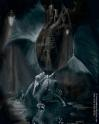

Forums galactiques > Taverne galactique : lieu de discussion informel > petit vote HRP sur le CPE
Je suis contre et je manifèste et bloke mon lycée | 14 | |
Je suis contre mai je reste inactif | 15 | |
Je suis pour | 11 | |
Je n'est pas d'avi sur se sujet | 6 | |
Total : 46 vote(s) | ||
Pages : 1 2
| soilwork Réputation à la taverne : -32  25/03 ETU 12:45 | Score : 0 Détails bin moi personnellement je suis contre et je bloke mon lycée et je manifeste.
Faudrai que sa bouge ( apelle a au blokage mardi matin et a manifesté l'aprés midi ) Voila c'est mieu comme sa ^^ | ||
| Chacomat Réputation à la taverne : 78 25/03 ETU 12:55 | Score : 0 Détails C'est plus clair comme ca.
| ||
| Mystèrax Réputation à la taverne : 1216  25/03 ETU 12:55 | Score : 0 Détails Oui c'est mieux.
Pour l'histoire des casseurs je vois pas ce que ça vient faire là. Eux ils viennent uniquement pour tout casser (d'où leur nom) et n'on rien à voir avec les manifestants. Pour ceux qui sont en terminale je sais qu'il y a le bac à la fin de l'année mais à quoi il va leur servir si on tombe dans le piège du CPE et ses conséquences???? Et puis il y a toujours la possibilité d'étudier en groupes au CDI ou chez vous (je sais que c'est pas super mais c'est mieux que rien). Et vous pouvez aussi demandez aux profs de vous donnez des polycopiés du cours que vous auriez du avoir( cela se fait dans beaucoup de lycées et notemment celui où je suis). Et vous pouvez aussi cherchez sur internet les résumés des cours. | ||
| Arthérius Réputation à la taverne : 1559  25/03 ETU 13:11 | Score : 0 Détails Je me suis mal fait comprendre ...
Par casseurs, je désignais les manifestants qui, en cas de résistance, se mettent à manifester à coups de briques et de battes dans les vitrines ... Apres, faut pas qu'ils se plaignent si ils prennent des coups ! | ||
| Mystèrax Réputation à la taverne : 1216 25/03 ETU 13:16 | Score : 0 Détails Oui et moi aussi je me suis mal exprimé.
Les casseurs se trouvent 9 fois sur 10 en fin de cortège mais ce ne sont pas de vrais manifestants, ils sont là uniquement pour se mettre sur la gueule. | ||
| Salibe Réputation à la taverne : 367  25/03 ETU 13:56 | Score : 0 Détails Vous connaissez les "appariteurs"? (cf. sketch de coluche sur la police) Ce sont des policiers en civil qui viennent casser pour discréditer une manifestation....
EDIT : Stupide mais efficace | ||
| Arthérius Réputation à la taverne : 1559 25/03 ETU 13:59 | Score : 0 Détails C'est relativement stupide ...
| ||
| Mystèrax Réputation à la taverne : 1216 25/03 ETU 14:02 | Score : 0 Détails Relativement stupide mais cela est fort possible et est même probablement déjà arrivé.
| ||
| Arthérius Réputation à la taverne : 1559 25/03 ETU 14:10 | Score : 0 Détails Je n'en doute pas, et cela me rebute...
C'est comme ca qu'apres, les jeunes ont une sale réputation et se font regarder d'un oeil méfiant lorsqu'ils demandent l'heure dans la rue ... Pouah ! Ca me dégoute comme méthode ... | ||
| Mystèrax Réputation à la taverne : 1216 25/03 ETU 14:16 | Score : 0 Détails Oué c'est n'importe quoi mais c'est "normal", le gouvernement ne veux pas perdre la face et c'est pour ça qu'ils font des trucs de ce style.
C'est aussi pour ça que Villepin ne veut pas enlever le CPE sinon il perd la face, et démissionera surement ce qui, soi dit en passant, ne serait pas une mauvaise idée. | ||
| Arthérius Réputation à la taverne : 1559 25/03 ETU 14:20 | Score : 0 Détails Pas perdre la face ?
Ben vu l'anarchie qui regne dans les rues apres chaque decision gouvernementale, c'est plutot mal barré... Enfin personnellement je ne vais pas tout casser parce que je ne suis pas d'accord ! | ||
| Mystèrax Réputation à la taverne : 1216 25/03 ETU 14:24 | Score : 0 Détails Moi non plus y a pas de risque.
| ||
| soilwork Réputation à la taverne : -32 25/03 ETU 14:31 | Score : 0 Détails oè mai voila moi j'était a la manif avec mon lycée les CRs on bombardé de l'acrimo alors que tt le monde etai assi jvoi pas trop comment on peu les agrésser en etant assi.
et des que les camera on filmé il on arèté moi jdi mardi btte de base ball avec des clous sa va chier. hahahahaha | ||
| Arthérius Réputation à la taverne : 1559 25/03 ETU 14:35 | Score : 0 Détails Vous savez que vous venez de trouver une solution au problème Commandant Soilwork?
Effectivement vous ne risquez pas de vous faire arnaquer par le CPE assis derriere des barreaux parce que dans le meilleurs des cas vous avez brisé une vitrine et dans le pire des cas une personne est en soins intensifs à la suite d'une fracture du crane due à une batte cloutée ? Utiliser la violence équivaut à se jeter dans un aquarium à requin : rien de plus stupide ! | ||
| soilwork Réputation à la taverne : -32 25/03 ETU 15:12 | Score : 0 Détails je vais vous expliqué se qui c'est passer.
jeudi a 14h rendevou pour manifestationa bellecour ( lyon ) la manif debute pour allé jusqu'a la bourse du travaille je croi. la mnif arrive puit les gens se mette sur la place. tout le monde est assi. pui les CRS encercle la place en laissan des distance. pui voila qu'il bombarde de l'acrimo sans réson et a l'arrivé des cameras et des medias il s'arrete. ne troué vous pas sa louche. | ||
| Némésis Réputation à la taverne : 1252  25/03 ETU 17:12 | Score : 0 Détails ben ouais ... ils ont bon dos les CRS !!!
ce genre de truc, ça date pas 'hier ... | ||
| Kyle Emagan Réputation à la taverne : 1309  25/03 ETU 17:55 | Score : 0 Détails Meme si ils ne sont aps parfaits, ce n'est pas une raison pour leur sauter dessus, ce sont de simple fonctionaires qui exercent leur travail... Y'en à meme probablement beaucoup qui sont aussi contre le CPE, mais ils sont la pour garder l'integrité... à leur manière certes, mais s'il n'y en aurai pas ce serais encore bien pire...
| ||
| Arthérius Réputation à la taverne : 1559 25/03 ETU 23:00 | Score : 0 Détails Yes sans compter qu'ils doivent attendre d'avoir l'ordre de donner l'assaut !
Alors comment réagiriez vous si on vous autorisait a foncer apres une douche de brique d'une demi heure ? | ||
| Vladimir Harkonnen Réputation à la taverne : 2306  25/03 ETU 23:02  | Score : 0 Détails Oubliez ce message... un truc sans importance.
Je fais changer mes lunettes demain. | ||
| Arthérius Réputation à la taverne : 1559 25/03 ETU 23:04 | Score : 0 Détails Commandant Harkonnen ajustez vos lunettes ^^
C'est ce topic qui est le bon pas l'autre (cf le premier message de son créateur ) ! |
Pages : 1 2
Forums galactiques > Taverne galactique : lieu de discussion informel > petit vote HRP sur le CPE